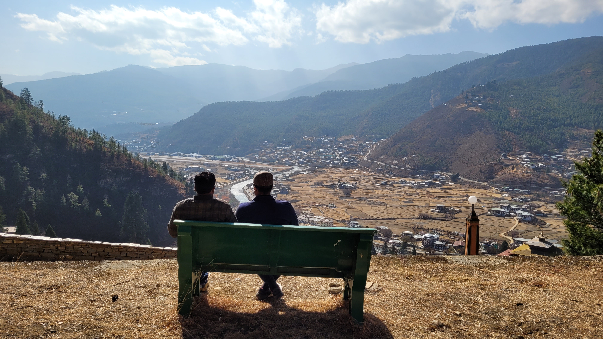

The year started with me going to Bhutan on the first day of the year. Probably the nicest time I will have in the whole year, although when I was on the trip I wanted to come back and resume my work and come to campus as the semester already started and I was missing the entire first week of classes. During this trip, I had a lot of time to think, relax and enjoy the trip as well. The weather was chilly but the rooms were cozy and after a whole day of exploring the places I used to love to come to my room and work. To be honest, I was not as excited as the other members on the trip, but now when I think about it, I am not going to have that level of peace and serenity for a long time.
After I came back I was excited to dwell into my work, I had 2 projects ongoing, I enjoyed being busy and at the same time, I attended classes to keep up with acads. But soon I fell ill and I don’t know how but the sickness prevailed for the next 2 to 3 weeks. During my trip to Bhutan, I made some resolutions just to increase my willpower and also improve my health which as I mentioned earlier is kind of my only resolution, this year. So I avoided sugar, maida, and junk food, ate a meal once a day, and the remaining time sprouts or milk. But it was hard to keep my mental sanity and ridiculously decrease the calorie intake, since I was ill too I became weak and had to quit after 2 weeks, My other streak was of taking a bath daily which I did at -3 degree Celsius in Bhutan too. I recently broke this streak on 9th February due to a hectic and messed up day which I may mention ahead. After recovering from illness, I was not able to bring my dietary habits on track and thus yet to this day I am yet to come back to my resolution. During all this, I was trying to do my work and was busy with one of the works and thus also began to skip my learning time. At the end of last month, I got an offer for a summer research project, which sounds great but was a nightmare for me. I have been working in various fields all of which fall into one big domain, this one was one of them but not exactly the one I want to pursue higher studies in, so I wasn’t sure to choose between this research opportunity or my industry internship offer that I got through campus. Thus, upon considering the views of some of my seniors and friends and yes ChatGPT I made my choice. I questioned my choice for many days, seeing nightmares about the road not taken, for real used to have dreams about it. Well, I am a bit calmer now, since I talked to my professor and one of the seniors working in the industry. Well during this time fest was going on and I missed almost all of it and realized the value of having people around although on the non fest days I prefer to be in my solitude.
So I went home, met my family, and tried to bring my messed-up routine on track, but I couldn’t. Since we are retrospecting, I should be completely honest.
Since I have started working on 2 projects, I am not able to give time to learning and the thought of losing time always bothers me, whether I am in my room or outside in a gathering. I have lost discipline and concentration. So, the harder I try to force it on me, the farther it’s going away from me. I think about changes I should make to my life; then as usual I think of starting on a fresh day and the remaining time is wasted and I am not able to start the next day too. The cycle keeps on repeating and thus to compensate for the time lost I cancel the time that I should give to my health or other self-development habits or to be very honest, meal time. I know my demons and thus I am always worried and anxious about fixing them. But I can’t find a way for rather than forcing discipline into my life, it should be a part of me. I have a lot to defend and a lot to fight for, I need a way to balance both of them. Rather than waiting for the clock to sync and then make changes in my life. I should function asynchronously and reset the clock at the present time because if I don’t, I am going to miss the posedge of the next clock cycle and never going to make changes to my life. I think I may have to read the book I have been cursing my friend for reading (Atomic Habits). Also, I think I should stop making targets to complete and just do what I can.
So yeah thats it.
Signing off
Aditya Ranjan Jha